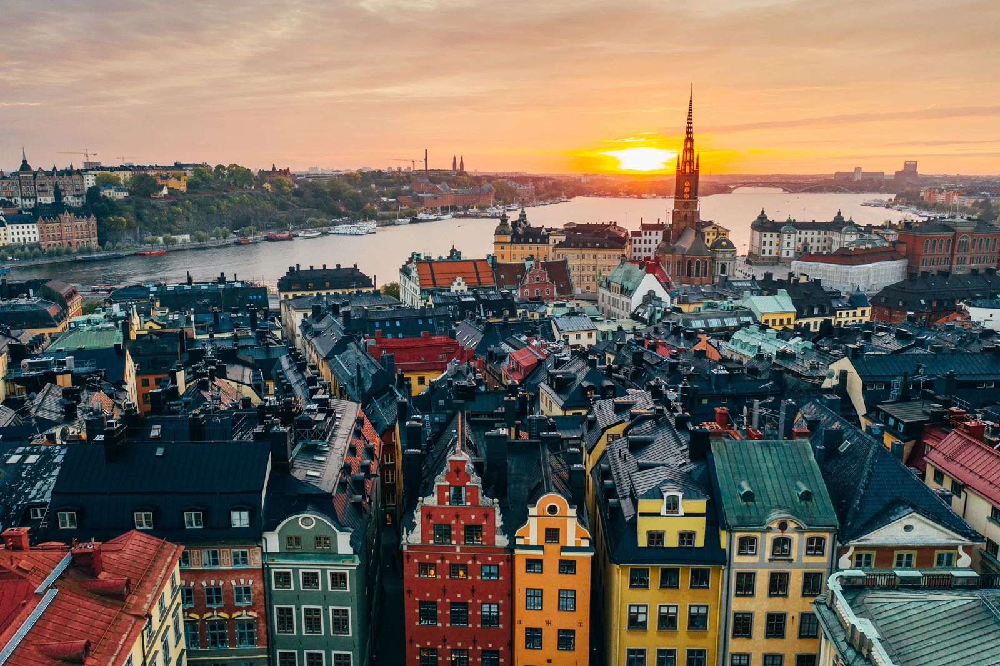
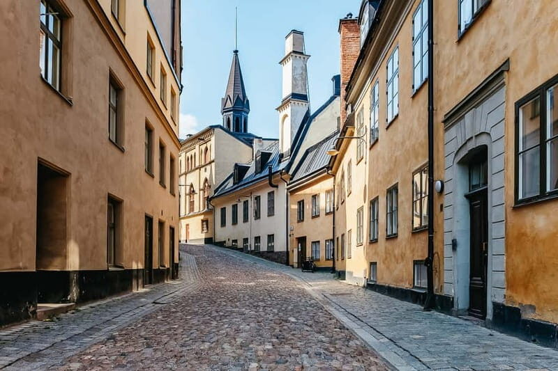
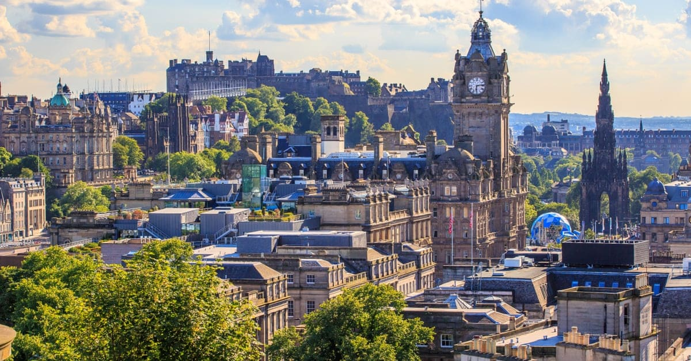
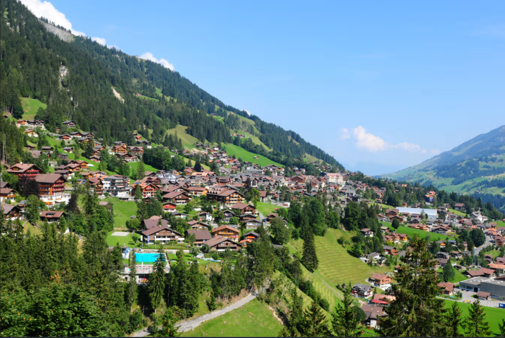
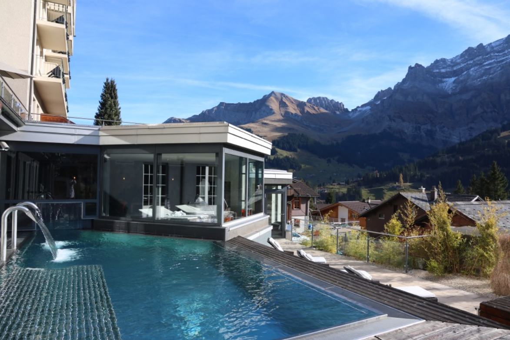
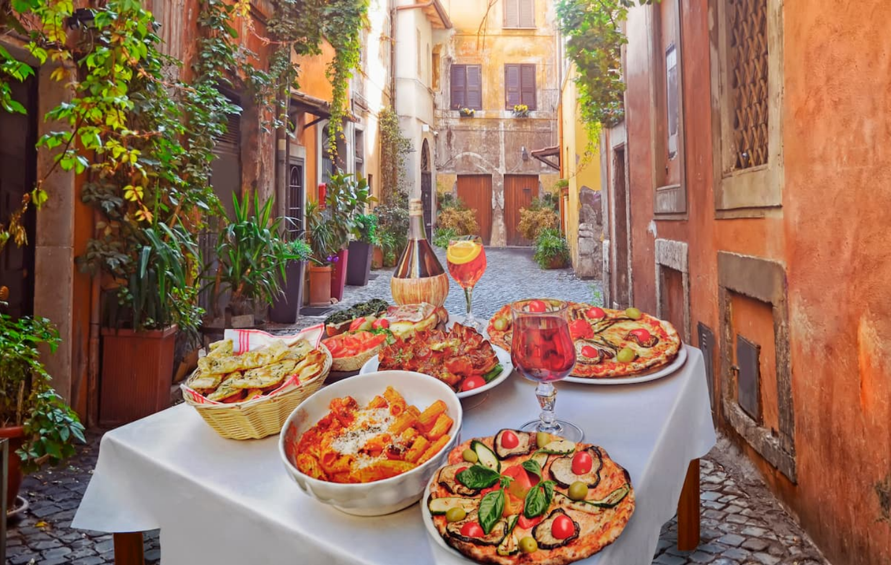

| Los Angeles, California |
 |
Hollywood sign, Chinese Theatre with the Walk of Fame, Universal Studios, Griffith Observatory, Santa Monica Pier, etc. |
Spring (March-May) and fall (September-November): when temperatures are mild, there are fewer crowds, and prices may be lower |
$2,500 |
|
Erewhon, In n' Out Burgers, other USA stores/restaurants |
| Stockholm, Sweden |
 |
Vasa Museum, Gamla Stan, Royal Palace |
Summer (June to August) for warm weather and long days, or May and September for pleasant weather, fewer crowds, and lower prices |
$1,000 |
 |
Cobblestone streets of Gamla Stan (Old Town) |
| Edinburgh, Scotland |
 |
Historic Edinburgh Castle, the Royal Mile, and the Palace of Holyroodhouse. |
Summer (June-August) offers the warmest weather, For fewer crowds and lower costs, (April-May) or autumn (September-October) |
$1,500 |
|
Edinburgh castle and Scotland scenery |
| Adelboden, Switzerland |
 |
Swiss Alpine village, most renowned for hosting the FIS Ski World Cup in the Adelboden-Lenk ski resort |
November to February is ideal for winter sports, while June to August offers the warmest weather for hiking and outdoor activities. |
$4,000+ |
 |
The beautiful scenic views from the Cambrian hotel |
| Petra, Jordan |
|
The Treasury (Al-Khazneh), The Monastery (Ad Deir), The Siq, The Royal Tombs, he Roman Theater, The Colonnaded Street |
Spring (March to May) and autumn (September to November) due to mild and pleasant weather |
|
The rose city Treasury building |
| Italy |
 |
Colosseum, Trevi Fountain, Sistine Chapel, Leaning Tower of Pisa, etc. |
Spring (April-May) and fall (September-October), offering pleasant weather, fewer crowds, and lower prices |
 |
Food, beautiful architecture, slow/leisure lifestyles |